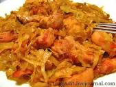

Первый рецепт: Тушенная капуста с мясом.

Ингредиенты (на 6 порций):
- Свинина (мякоть) - 500 г или говядина (мякоть) - 500 г
- Лук репчатый крупный - 2 шт.
- Капуста квашеная - 300-400 г
- Капуста белокочанная - 700-800 г
- Томат-паста - 3-5 ст. л. или помидоры - 4 шт.
- Лавровый лист - 4-5 шт.
- Масло растительное без запаха - 70-100г
- Соль - 1 ч.л.
- Перец чёрный - 1 щепотка
- Зелень для украшения - по желанию
Как приготовить капусту тушеную с мясом:
- Лук почистить и помыть. Нарезать полукольцами.
- В сковороду с высокими бортиками налить растительное масло слоем 4-5 мм. Поставить на средний огонь и высыпать мелко нарезанный лук. Тушить до мягкости и прозрачности (примерно 5 минут), не зажаривать.
- За время, пока тушится лук, мясо помыть, осушить и нарезать кусочками размером 2-3 см.
- Затем мясо добавить на сковороду к луку. Тушить 5 мин. на сильном огне помешивая.
- Затем добавить квашеную капусту, перемешать и тушить под крышкой 15-20 мин. на небольшом огне.
- Свежую капусту нашинковать крупными кубиками или полосками.
- Капусту добавить на сковороду. Посолить, поперчить и тушить до мягкости под крышкой помешивая. Первый раз проверить мягкость "на вкус" нужно через 30 минут. Обычно этого времени достаточно. Если капуста жестковата или просто хочется сделать ее еще мягче, можно тушить капусту дольше (до 1,5 часов), проверяя готовность каждые 15 минут.
- Через 20-30 минут после добавления капусты добавить томат-пасту или очищенные свежие помидоры.
- Когда тушеная капуста с мясом будет готова, добавить лавровые листья, выключить огонь и дать настояться под крышкой 10-15 мин.
- Вот она, готовая капуста тушёная с мясом.
Приятного аппетита!